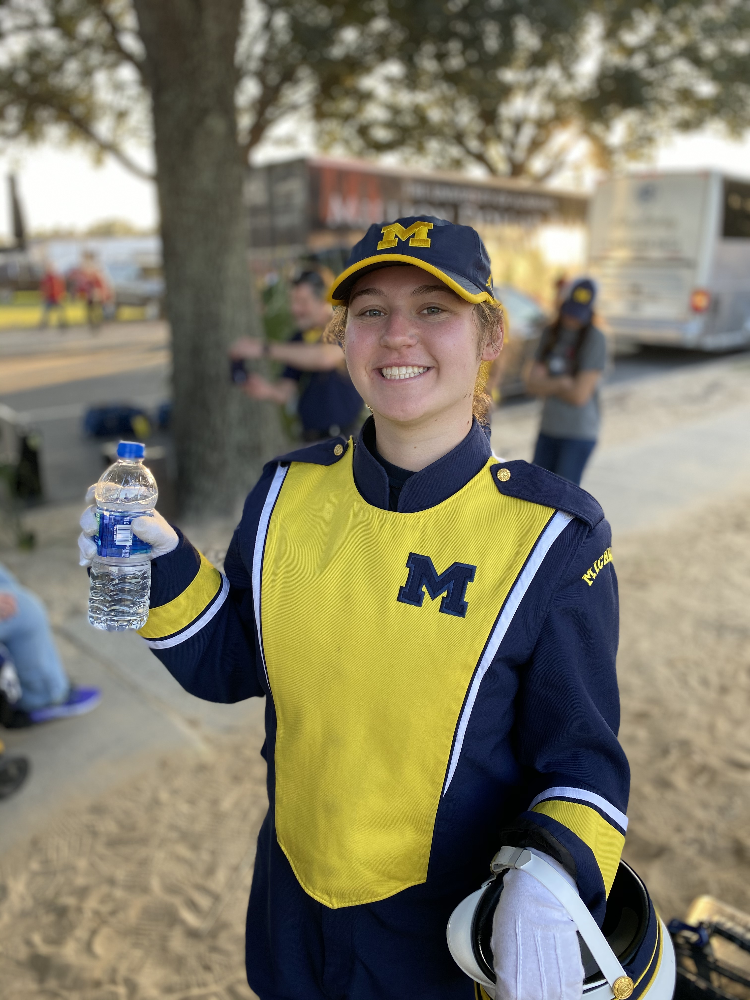
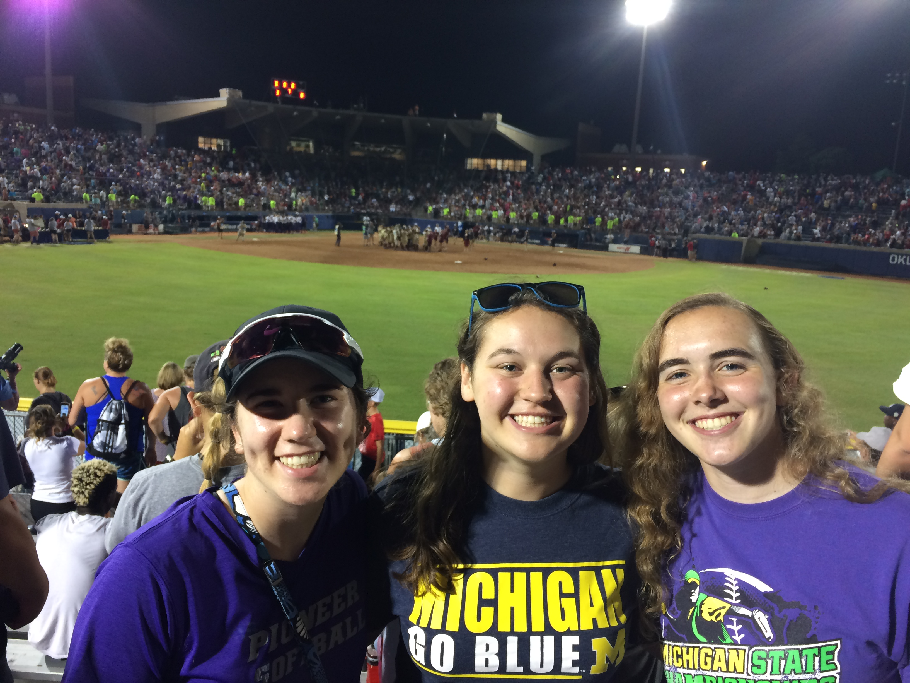
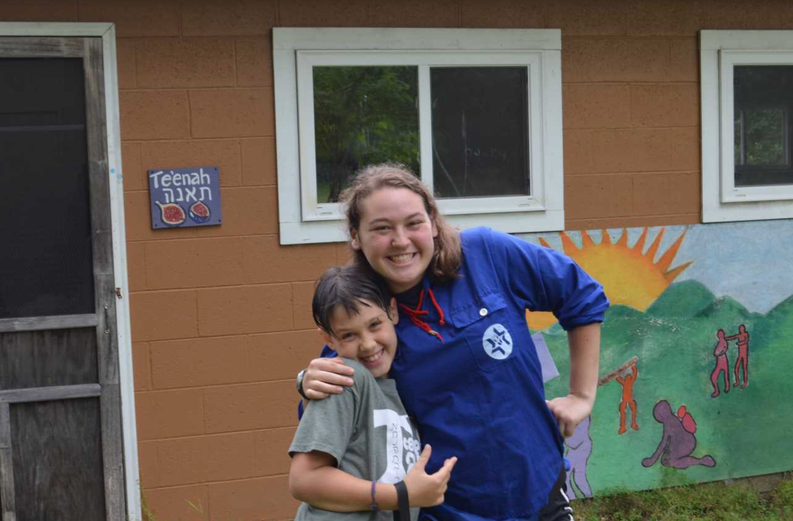

Home
I’m Jane Mintz! I am a Junior in the School of Information at the University of Michigan! I am studying Information Analysis and I am interested in using data in practical applications.
I’m from Ann Arbor Michigan. I graduated from Pioneer High School in 2017 where I was the captain of the softball team, a member of the band for four years, and involved in National Honor Society.
Outside of class I have been in the Michigan Marching and Basketball Bands for the past three years where I play the Trumpet!
Ever since I was six years old I have loved softball. I played competitively through 12th grade and this will be my third season as the JV Coach at Pioneer High School!
Since 2011 I spent every summer at Habonim Dror Camp Tavor! It is a Jewish sleepaway camp in Three Rivers, Michigan and during summers 2017-2019 I worked on the staff in the kitchen, as a counselor, and lastly as a head counselor!